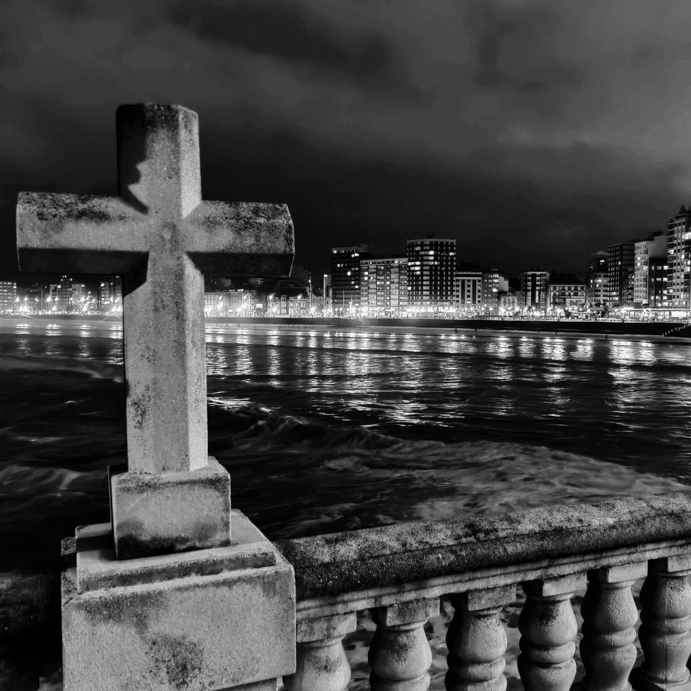
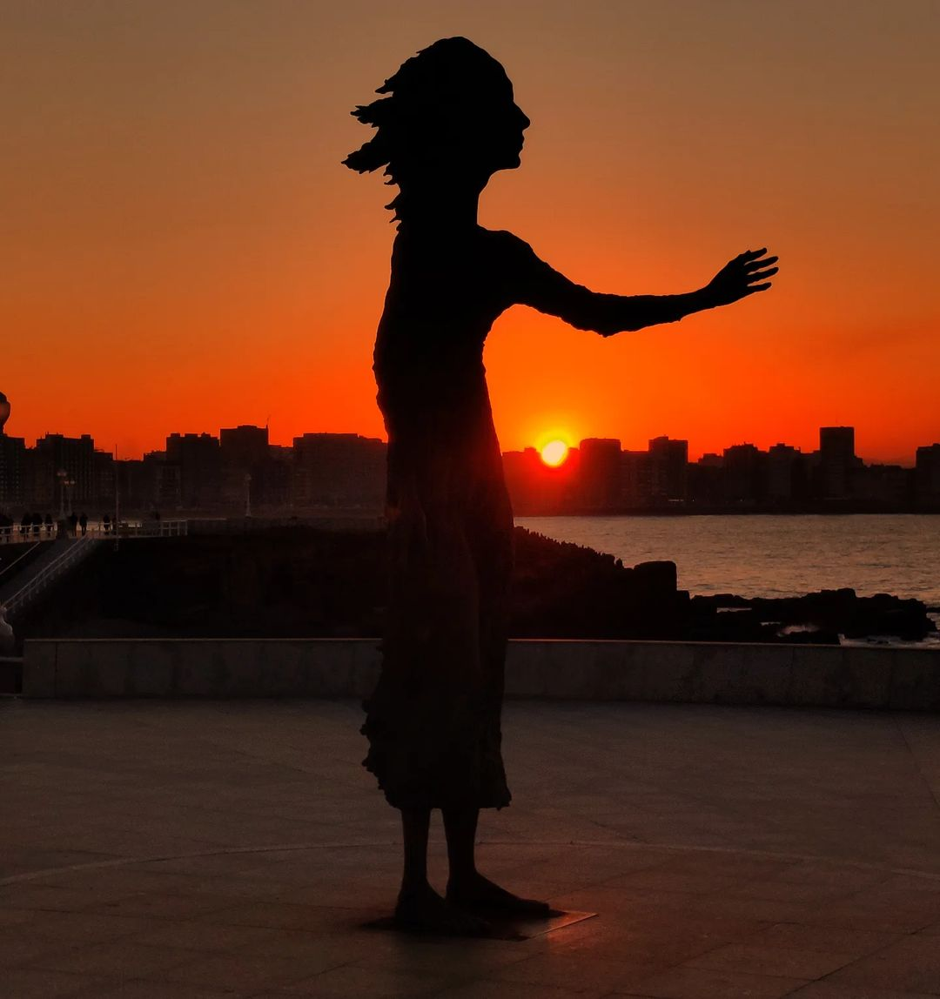
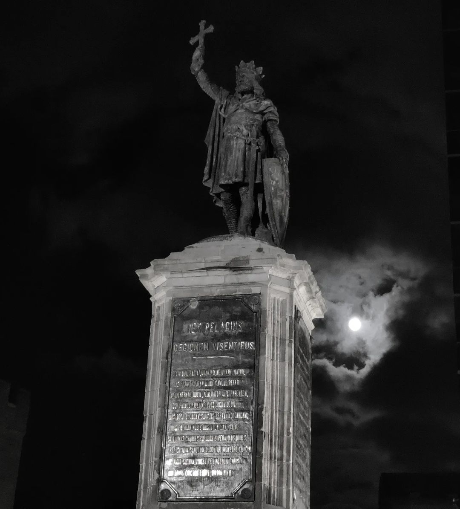
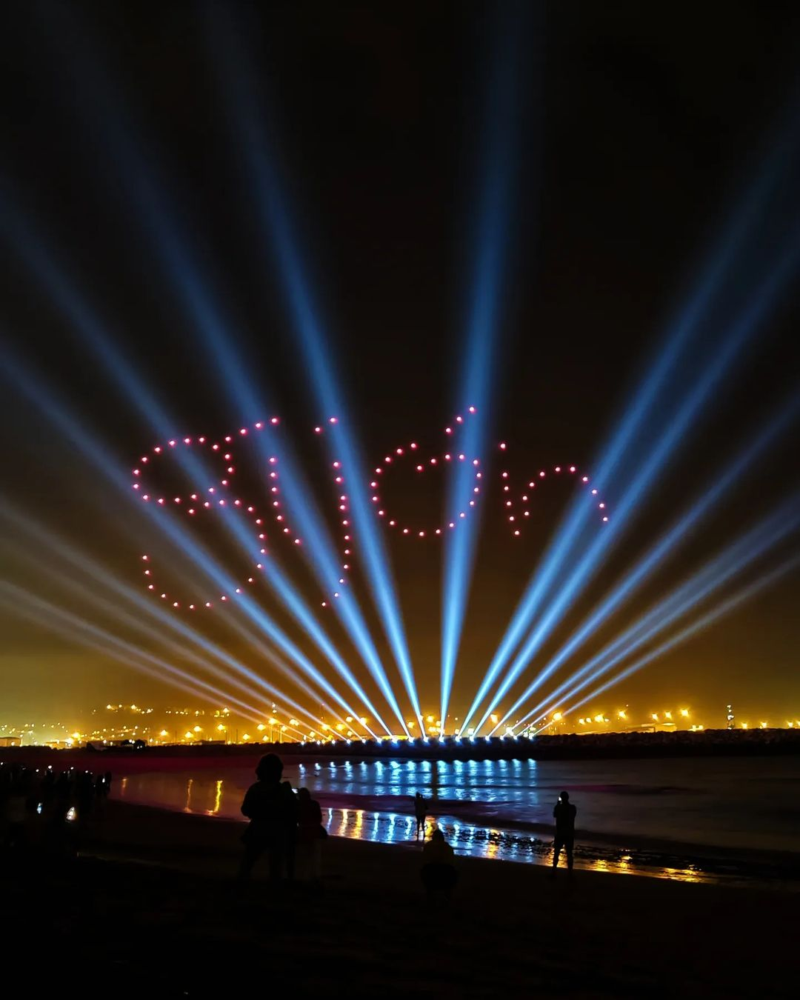
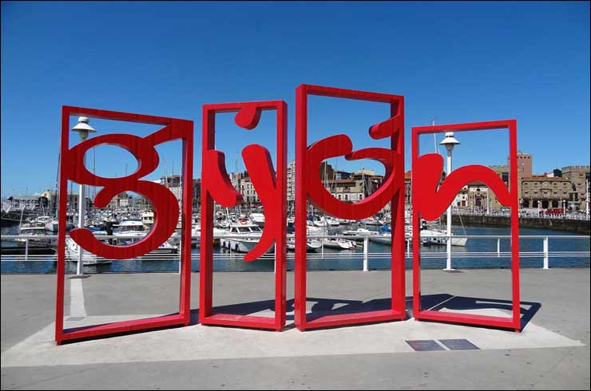
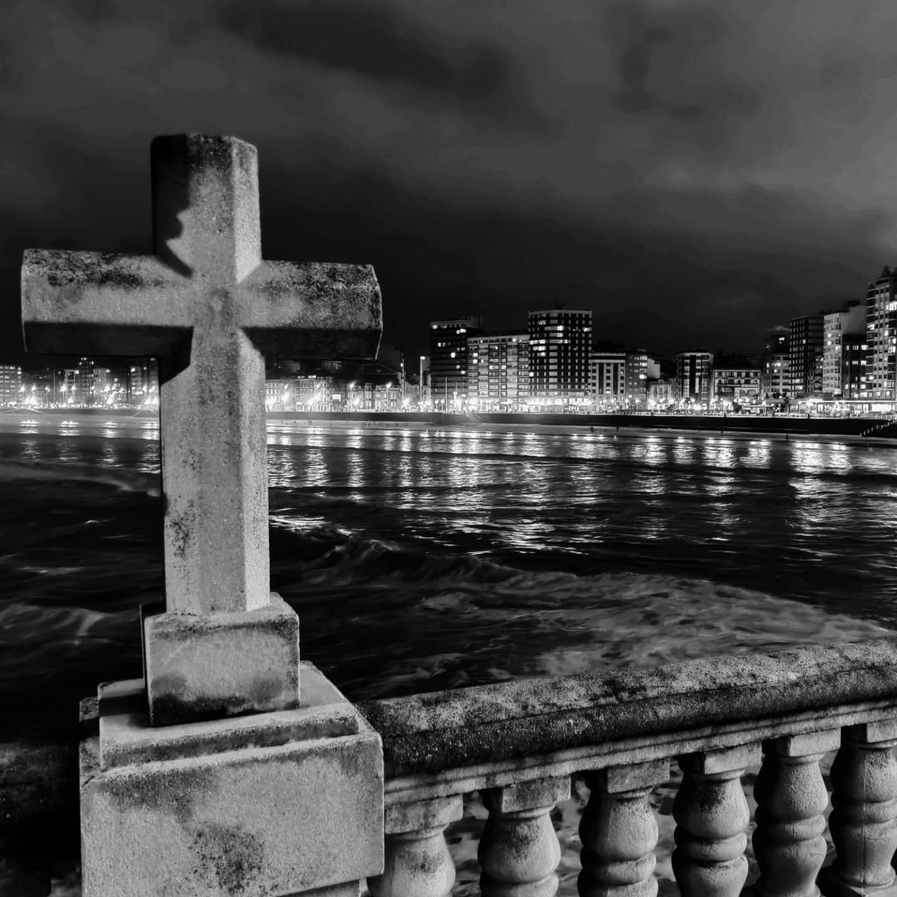
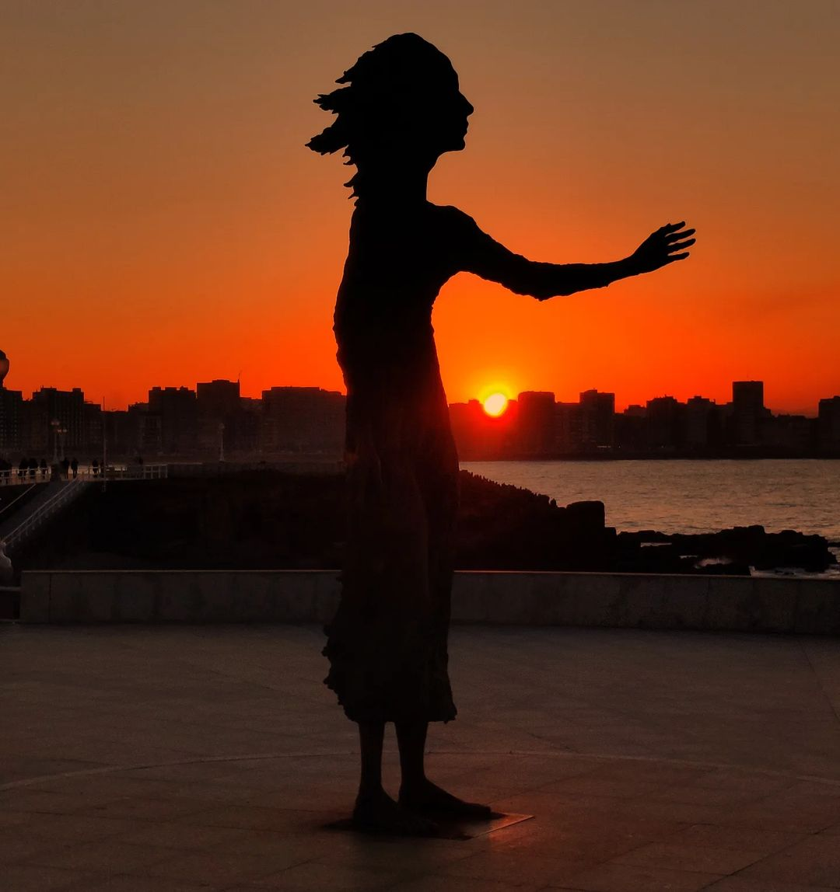
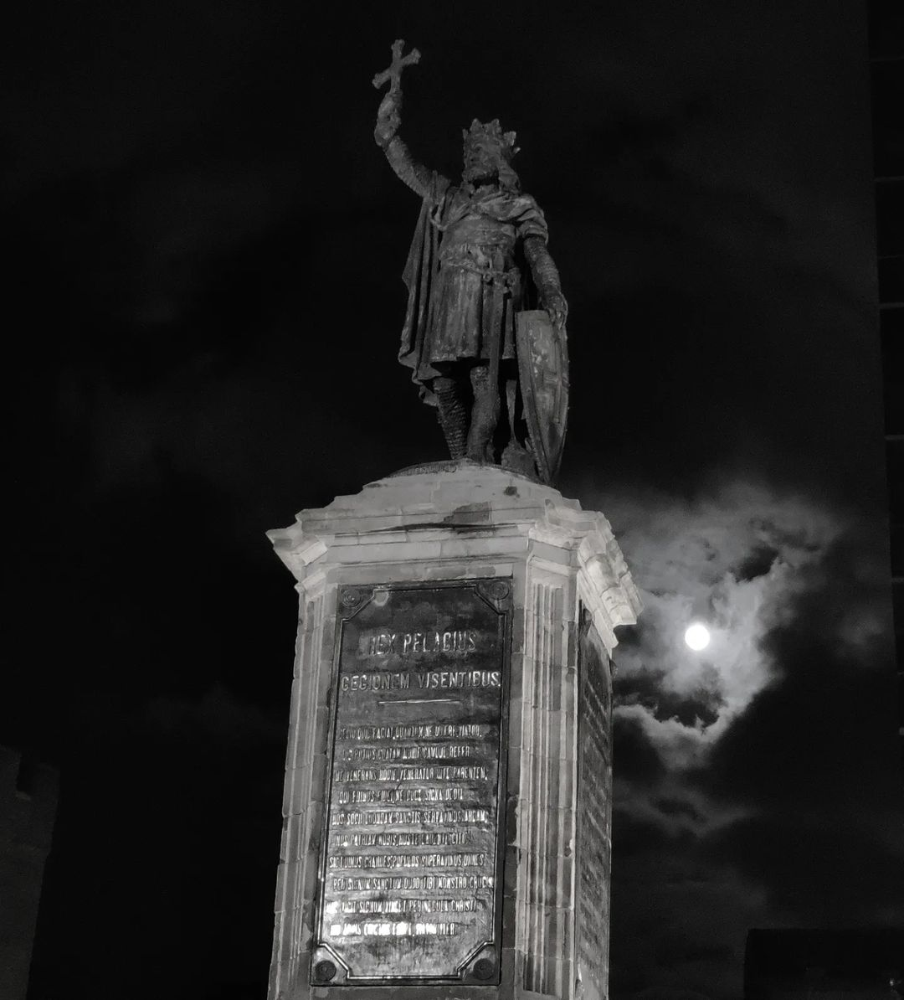
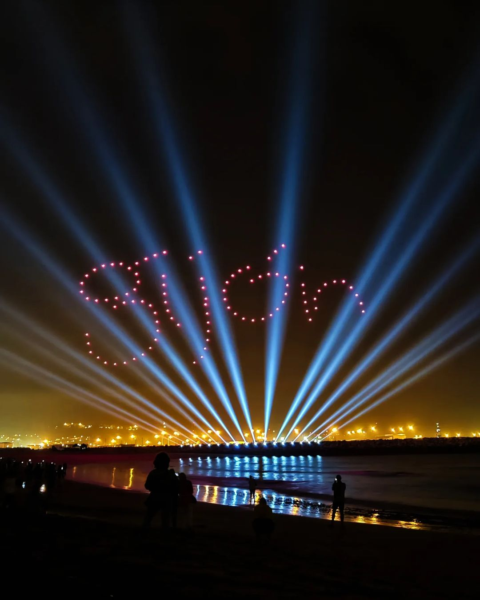
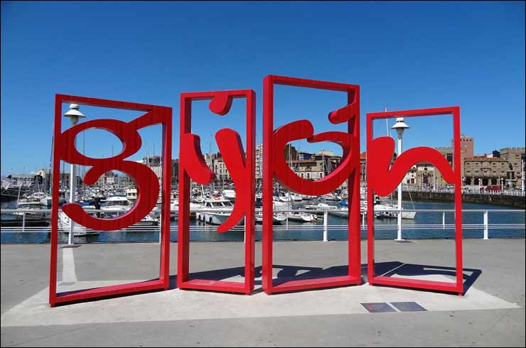

Gijón (en asturiano Xixón) es una ciudad española con la categoría histórica de villa. Es el único núcleo de población de la parroquia del mismo nombre. Su concejo denominación que reciben los municipios en el Principado de Asturias es el más poblado de la comunidad autónoma, con 267.706 habitantes en 2022.
Geográficamente, la ciudad y su término municipal se localizan junto a una bahía en la zona central de Asturias, a 28 km de Oviedo y 26 km de Avilés. Allí forman parte de una gran área metropolitana que abarca veinte concejos de la región. Esta área, vertebrada por una densa red de carreteras y ferrocarriles, contaba con una población de 835 053 habitantes en 2011, los cuales la convierten en la séptima de España. En la península ibérica, la villa y el concejo se sitúan en la parte central de la cornisa cantábrica y, a escala europea, en la zona sur del Arco Atlántico.
Desde su fundación en época romana, el desarrollo del núcleo urbano ha estado vinculado al de su puerto, que actualmente es líder en movimientos de graneles sólidos en España. Hasta fechas recientes, Gijón tuvo un carácter eminentemente industrial, lo que favoreció su gran crecimiento de los siglos xix y xx. No obstante, durante las últimas décadas, la crisis de la siderurgia y el sector naval han llevado a la reconversión de su tejido productivo, transformando la ciudad en un centro turístico, universitario, comercial y de I+D+i. Así, además de contar con una red municipal de museos, alberga la Milla del Conocimiento Margarita Salas. Esta comprende el complejo cultural de la Universidad Laboral, un campus universitario y un parque científico y tecnológico.
La ciudad es conocida por antonomasia como «capital de la Costa Verde» y es asimismo capital de la provincia marítima de Gijón. Por el concejo discurre el Camino de Santiago en su ruta costera y en él tienen su sede el Consejo Consultivo del Principado de Asturias, la Radiotelevisión del Principado de Asturias y el Centro de Seguridad Marítima Integral de Salvamento Marítimo.
Gijón está situado en el centro de la costa cantábrica del Principado de Asturias, España, en el suroeste de Europa, al norte de la península ibérica, sobre una rasa litoral en las estribaciones de la cordillera Cantábrica. Forma parte de la vertiente hidrográfica cantábrica y se sitúa en su punto más alto (Pico Cima) a 737 m s. n. m.. El punto más alto de la zona urbana (Ceares) se sitúa a 59 m s. n. m.. El término municipal de Gijón tiene una superficie de 182,1 km² y una forma vagamente rectangular. La ciudad, que ocupa una superficie aproximada de 13,9 km², está situada en el tramo costero central del concejo, en una bahía dividida por el Cerro de Santa Catalina (Cimadevilla) que separa la playa de San Lorenzo al este, del Puerto Deportivo, playas de Poniente y Arbeyal, astilleros y puerto de El Musel, al oeste.
El término municipal de Gijón limita con los siguientes concejos: Carreño al noroeste, Corvera al oeste, Llanera al suroeste, Siero al sur y Villaviciosa al este. Con Sariego sus límites llegan a unirse en un pequeño punto correspondiente a la Peña de los Cuatro Jueces, así llamada por constituir la confluencia de los concejos de Gijón, Villaviciosa, Sariego y Siero.
Gijón forma parte de la vertiente hidrográfica cantábrica. Los ríos más destacables del concejo son el río Aboño y el río Piles. El río Aboño es el de mayor tamaño y caudal. Nace en el Alto de la Miranda (Llanera) y desemboca en el límite entre el concejo de Gijón y el de Carreño formando así la ría de Aboño, fuertemente industrializada en las últimas décadas. Este río se encuentra embalsado a la altura de San Andrés de los Tacones, al oeste del concejo al lado de la autopista A-66, y sirve de abastecimiento de la empresa ArcelorMittal. El principal afluente del Aboño es el río Pinzales, de similar importancia hidrológica. El Pinzales nace en el concejo de Siero y atraviesa el concejo de Gijón de sur a norte. El río Piles, de gran importancia por atravesar parte del casco urbano de la ciudad, es un río corto y de caudal escaso cuyos 10 o 15 kilómetros transcurren íntegramente dentro de los límites del municipio, atravesando la parte este de la ciudad hasta desembocar en la playa de San Lorenzo. Existen otros arroyos menores (Peña Francia, Santurio, San Miguel, Tremañes, Cutis, Pilón, etc), de los cuales el más importante es el de La Ñora, que forma un tramo de la frontera con el concejo de Villaviciosa y desemboca en la playa del mismo nombre.
El clima de Gijón, determinado por la presencia del mar y la baja altitud del concejo, es un clima oceánico, con abundantes precipitaciones desde el otoño hasta los primeros días de la primavera, y un tiempo más estable y cálido en verano. Según los datos ofrecidos por la Agencia Estatal de Meteorología para la estación meteorológica de Gijón (período 1971-2000), la media del mes más frío (enero) fue de 8,9 °C, la media del mes más cálido (agosto) fue de 19,7 °C y la temperatura media anual es de 13,8 °C (media anual de máximas: 17,6 °C; media anual de mínimas: 9 °C). La nieve cubre ocasionalmente en el invierno los montes del concejo que rodean la ciudad y llega de forma esporádica al centro de la ciudad, con una media de un día de nieve anual.
La precipitación media anual es de 920 l/m². Ello se debe al denominado efecto de ladera, según el cual las lluvias más intensas se localizan en las zonas más altas y las mínimas en zonas costeras del centro y el occidente. Coincidiendo con la época de menos lluvias se dan situaciones de aridez y sequía (el 11 % de los meses hay aridez y el 9 % el déficit hídrico es grave).
Los vientos son esporádicos y estacionales. En invierno soplan preferentemente del sureste, templados y cálidos, a causa de la retirada hacia el sur del anticiclón de las Azores, con lo que las borrascas atlánticas siguen una trayectoria más meridional. En verano la situación se invierte, predominando vientos del nordeste, fríos y secos.
| Mes | Ene. | Feb. | Mar. | Abr. | May. | Jun. | Jul. | Ago. | Sep. | Oct. | Nov. | Dic. | Anual |
|---|---|---|---|---|---|---|---|---|---|---|---|---|---|
| Temp. máx. media (°C) | 14.2 | 14.2 | 15.1 | 16.5 | 18.2 | 20.7 | 23.1 | 23.6 | 22.3 | 20.1 | 16.7 | 15.9 | 18.4 |
| Temp. media (°C) | 11.0 | 10.8 | 11.9 | 13.5 | 15.4 | 18.0 | 20.5 | 20.7 | 19.4 | 17.0 | 13.5 | 11.9 | 15.3 |
| Temp. mín. media (°C) | 7.8 | 7.4 | 8.6 | 10.5 | 12.6 | 15.3 | 17.9 | 17.7 | 16.5 | 13.8 | 10.3 | 7.8 | 12.2 |
| Precipitación total (mm) | 136 | 121 | 103 | 66 | 62 | 55 | 37 | 41 | 65 | 88 | 169 | 87 | 1032 |
| Horas de sol | 100 | 105 | 153 | 177 | 183 | 153 | 171 | 197 | 188 | 155 | 112 | 120 | 1814 |
La actividad cultural es muy amplia, y hace especial hincapié en la formación pública. Desde 1981 existe una Universidad Popular con talleres y cursos, así como una red de centros sociales y bibliotecas en cada barrio. Tienen especial importancia el Ateneo Jovellanos, institución liberal fundada en 1953 con el impulso del catedrático y político Torcuato Fernández-Miranda, el Ateneo Obrero de Gijón, una entidad cultural con más de cien años de vida, Ateneo de la Calzada, el Antiguo Instituto Jovellanos y un futuro centro cultural en Cimadevilla, la Tabacalera.
Se realizan actividades culturales todo el año, que aumentan considerablemente en los meses de verano, sobre todo en agosto por las fiestas de la Asunción (15 de agosto), con fiestas, música y teatro, que complementan la programación continua del Teatro Municipal Jovellanos. Entre los actos consolidados en la ciudad podemos destacar:
Los centros municipales programan en sus sedes todo tipos de espectáculos, destaca la cita con el jazz que se celebra al menos una vez al mes en el Antiguo Instituto bajo el nombre Jazz en el Centro. Desde 2006, la ciudad cuenta con un coro de voces blancas conocido en toda la región, los Niños Cantores de Gijón, que ofrecen anualmente conciertos de diferentes iglesias y parroquias de la ciudad, tales como San José, Nuestra Señora de Fátima o San Nicolás de Bari entre otros.
En Gijón existen gran número de museos:
José Luis Garci grabó a principios de la década de 1980 la mayor parte del metraje de Volver a empezar, película que posteriormente obtendría un Oscar de la Academia a la mejor película extranjera. A principios de la década de 1990 hubo un auge de bandas de música indie en la villa, que se conoció como el Xixón Sound. También la comedia La gran aventura de Mortadelo y Filemón fue grabada en parte en la Ciudad de la Cultura de Gijón, conocida como la Universidad Laboral en la parroquia de Cabueñes. En 2006, la ciudad albergó el rodaje íntegro de la película de los hermanos Ulloa, Pudor. Y en 2009, la Laboral y sus alrededores se convertirían en Oxford para la película de Fernando González Molina, Fuga de Cerebros. En 2019 también se rodó en Gijón (concretamente en la Quinta Bauer en Somió, RCAR, calle Corrida y en el bar restaurante El Globo, entre otras localizaciones) la película Si yo fuera rico de Álvaro Fernández Armero para Mediaset y Telecinco.
Asimismo existen en la villa numerosos grupos tanto profesionales entre los que se cuentan a Higiénico Papel, Teatro del Norte, Teatro Margen, Konjuro teatro... así como grupos amateur como Atrebil, Compañía asturiana de comedias, Electra, G con G, La capacha, La Galerna, La Peseta, Rosario Trabanco, Telón de Fondo, Trama y Traslluz. Todos ellos tanto unos como otros conocidos fuera de los límites de la villa, como de la provincia asturiana, recibiendo premios y menciones.
Destacan los siguientes teatros:
Gijón destaca por albergar la Semana Negra, que se celebra anualmente desde 1988, año en que el escritor asturmexicano Paco Ignacio Taibo II la organizó por primera vez, como un acontecimiento cultural que serviría de marco a un encuentro del ejecutivo de la Asociación Internacional de Escritores Policíacos, (AIEP).
Existe también una feria del libro: FELIX (FEria del LIbro de Xixón), que se celebra durante el mes de junio en el Paseo de Begoña y la calle Tomás y Valiente.
Podemos destacar dentro de la comida clásica, como primeros, les fabes, las reinas en la cocina asturiana, ya sea en la conocidísima fabada asturiana con compango (chorizo, morcilla asturiana y lacón), como con almejas, centollo, con caza, etc y el pote asturiano. En los segundos, el puerto aporta sabrosos pescados y mariscos del Cantábrico con el que se realizan recetas tradicionales como la chopa a la sidra, besugo a la espalda, ventresca de bonito o los oricios, aunque también tienen su importancia los platos de carne de las parroquias del interior como la ternera o el pitu de caleya. Los postres típicos son el arroz con leche, tarta charlota, tarta gijonesa, biscuit Gijón, bombones de sidra de. Debería resaltarse que las «princesitas» siguen realizándose de forma artesanal.
Gijón es cantera también de jóvenes cocineros que han rejuvenecido la cocina asturiana gracias a la Escuela de Hostelería de Gijón, en el paseo de Begoña.